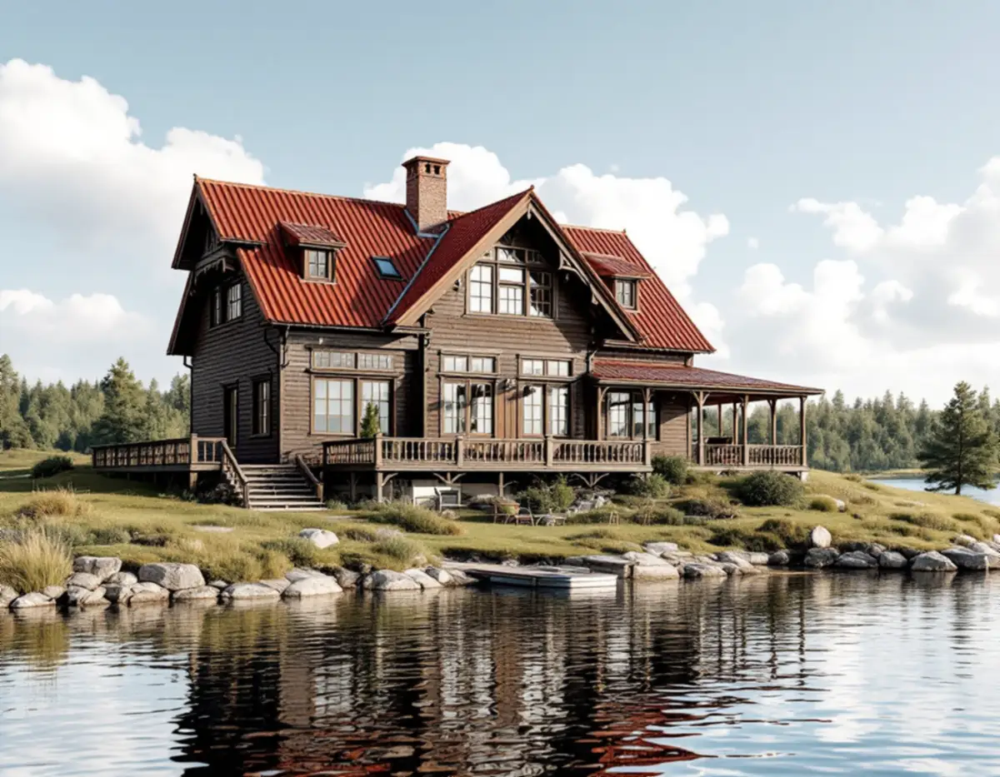
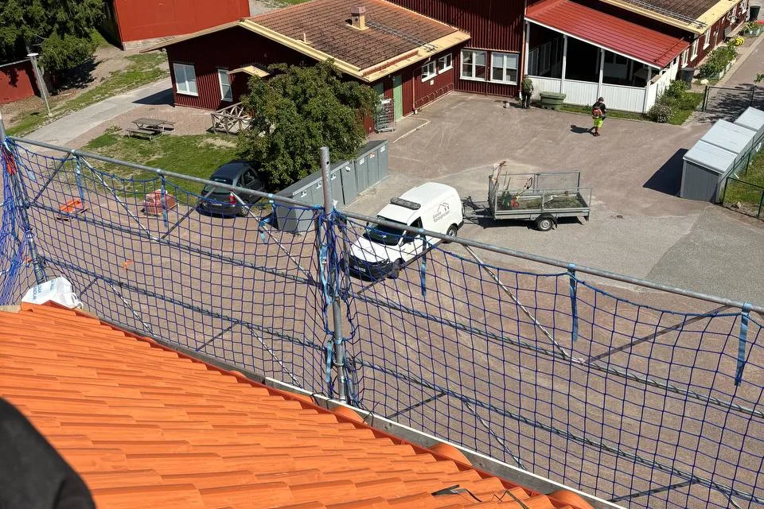

Vilken epok är huset från?
Vi utgår från husets byggår och den karaktär kommunen beskriver för egnahem, folkhem eller rekordår.
Vad en takrenovering i Haninge innebär beror mycket på när huset byggdes. En egnahemsvilla från 1920-talet har ofta tegel på ett brant sadeltak, ett radhus från 1970-talet allt från sadeltak till flackt valmat tak eller pulpettak, och en sommarvilla på Dalarö plåt eller tegel som är en del av ortens riksintresse.

Haninge kommun delar i sin skrift Haninges karaktärsmiljöer in småhusbebyggelsen i tre epoker. Egnahemsområdena från 1910–1940-talen finns i bland annat Tungelsta, Vendelsö, Vendelsömalm, Handen, Västerhaninge och Norrby. Folkhemmets villor, kedjehus och radhus från 1940–1960-talen finns i Handen, Jordbro, Vendelsö, Vendelsömalm och Västerhaninge.
Rekordårens småhus från 1960–1980-talen, ofta i grupphusområden med friliggande villor, radhus eller kedjehus, finns i Jordbro, Brandbergen, Västerhaninge och Handen. Tungelsta har en egen historia: AB Egna hem köpte upp stora gårdar och styckade dem till småbruk, vilket gjorde orten till ett centrum för handelsträdgårdar.
Dalarö utvecklades från 1860-talet och ungefär femtio år framåt till en exklusiv bad- och sommarort, och under 1880–90-talen byggdes ett stort antal storslagna sommarvillor, enligt en antikvarisk förundersökning för kommunen. Väster om Vadviken ligger fritidshusområdena Kolbotten och Västra Vadviken, planlagda på 1930- och 1950-talen.

Enligt karaktärsmiljöerna är tegeltäckta sadeltak eller brutna tak typiska för egnahemsvillorna, tillsammans med träpanel och enkelt spröjsade fönster. Folkhemmets hus har sadeltak eller valmade tak. Hos rekordårens småhus varierar takformerna från branta sadeltak till flackare valmade tak och pulpettak.
På egnahemsvillorna ligger ofta pannor som kan återanvändas, medan läkt och underlagspapp är slut. På 60–80-talshusen är det de flacka lutningarna som är känsliga: där rinner vattnet långsamt, och underlagspappen får göra mer av jobbet. Riktigt låga pulpettak täcks med papp eller plåt, eftersom pannor kräver en viss minsta lutning.
I Kolbotten har takbeläggningen enligt kulturmiljöinventeringen i många fall bytts till taktegelimiterande plåt, men det finns också takpapp, tegel och betongpannor. Läs mer om skillnaden mellan tegel, betong och plåt.
Dalarö – Jutholmen – Dalarö skans (AB 605) är riksintresse för kulturmiljövården. En del av motiveringen är sommarnöjesmiljön som växte fram under slutet av 1800-talet, och bebyggelsemönstret med societetshus, hotell och sommarvillor anges som uttryck för riksintresset.
Den antikvariska förundersökningen för villan Bellevue beskriver ett tak av grön skivtäckt plåt med ståndrännor och plåtklädda skorstenar, och rekommenderar att plåttaket och de ursprungliga takkuporna bevaras. För nya byggnader på tomten anges sadeltak med tegel eller målad plåt som lämpligt. Det ger en bild av vad kommunen väger in i den här miljön.
Läget vid inloppet till Stockholm innebär vind från öppet vatten och fukt året runt. Östersjön är bräckt med 6–9 gram salt per kilo i Egentliga Östersjön, enligt SMHI, men vind och fukt räcker för att plåt, spik och beslag ska behöva gott skydd.
Sedan 1 december 2025 behövs normalt inget bygglov för att byta taktäckningsmaterial eller kulör på ett en- eller tvåbostadshus, enligt Boverket. Lov kan fortfarande krävas om detaljplanen eller områdesbestämmelser har skyddsbestämmelser eller utökad lovplikt, eller om byggnaden är särskilt värdefull enligt 8 kap. 13 § PBL. Höjs taket kan det räknas som tillbyggnad, så stäm av med kommunen innan takets form eller höjd ändras.
Haninge kommun skriver på sidan om fasadändring att skärpta krav gäller i områden som är särskilt värdefulla eller riksintressen för kulturmiljövård. Kommunen uppdaterar det digitala kartskiktet över särskilt värdefulla kulturmiljöer, och tills det är klart kan man fråga bygglovsenheten om en fastighet berörs. Kommunen påpekar också att ändringar alltid ska utföras varsamt.
Karaktärsmiljöerna gäller som råd för alla småhusområden från respektive epok, även de som inte är utpekade som särskilt värdefulla. På Dalarö har flera fastigheter egna detaljplaner med varierande bestämmelser, medan inventeringen av Kolbotten konstaterade att gällande planer där saknade kulturhistoriskt skydd. Därför kontrollerar vi den plan som gäller för just din fastighet.
Grupphusområdena från rekordåren har upprepade volymer och enhetliga material, och kommunen beskriver just enhetligheten som ett bärande drag. Ett tak som byts till ett avvikande material eller en avvikande kulör bryter mot den bilden, även när det inte krävs lov.
I en radhuslänga är plåten över brandväggarna och anslutningarna mot grannarna det som kräver mest omsorg. Om flera grannar lägger om samtidigt blir resultatet både tätare och mer enhetligt. Läs mer om plåttak om ni överväger att byta från pannor till plåt.
På en egnahemsvilla är en takrenovering oftast en omläggning: pannorna tas ner, råsponten kontrolleras, ny underlagspapp och läkt läggs och pannorna läggs tillbaka. Är taket brutet ägnar vi brytningslinjen och plåten där särskild uppmärksamhet.
På 60–80-talshus med flack lutning väljer vi en underlagspapp som är avsedd för den låga lutningen och ser över hängrännor och stuprör. På Dalarö utgår vi från husets ursprungliga takmaterial och detaljer. För fler takarbeten i kommunen, se takläggare i Haninge.
Vi utgår från husets byggår och den karaktär kommunen beskriver för egnahem, folkhem eller rekordår.
Vi kontrollerar detaljplan, områdesbestämmelser och kulturmiljöprogram, särskilt på Dalarö.
Vi går igenom pannor, plåt, underlag och vind och fotograferar det vi hittar.
I ett enhetligt grupphusområde föreslår vi material och kulör som passar längan; på en sommarvilla det som liknar originalet.
Taket läggs om på nytt underlag och brytningar, ränndalar och skorstenar får ny plåt.
Rännor och stuprör ses över och vi går igenom taket med dig.
Rotavdraget för 2026 är 30 procent av arbetskostnaden, högst 50 000 kr per person och år, och rot och rut får tillsammans vara högst 75 000 kr. Material och resor ger inget avdrag. Vi drar av beloppet direkt på fakturan.
Det gäller även sommarhuset på Dalarö eller fritidshuset i Kolbotten om du äger och använder det. I ett radhusområde gör varje ägare avdraget för sitt eget hus, och är ni två ägare kan ni båda använda ert utrymme.
Kostnaden för en takrenovering i Haninge påverkas av takets storlek och form – ett brutet tak eller många kupor tar längre tid – av hur många pannor som går att återanvända, av mängden plåt kring skorstenar och brytningar, och av tillgängligheten till tomten. Läs mer i vad kostar en takrenovering och testa kalkylatorn för takbyte.
Takbyte, besiktning och plåtarbeten.
Takläggare i Haninge →Så fungerar en omläggning.
Takrenovering och takomläggning →Det här styr priset.
Vad kostar en takrenovering? →Räkna på takytan och ROT.
Takbyte-kalkylator →Solberga, Raksta och Brevik.
Takrenovering i Tyresö →Stuvsta, Snättringe och Skogås.
Takrenovering i Huddinge →Skärgård, vind och fritidshus.
Takrenovering i Värmdö →